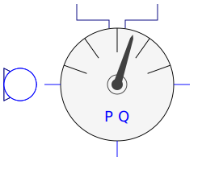
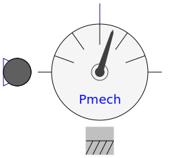
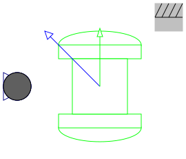

| Name | Description |
|---|---|
| Length of space phasor -> RMS voltage | |
| Length of space phasor -> RMS current | |
|  ElectricalPowerSensor | Instantaneous power from space phasors |
|  MechanicalPowerSensor | Mechanical power = torque x speed |
|  RotorDisplacementAngle | Rotor lagging angle |